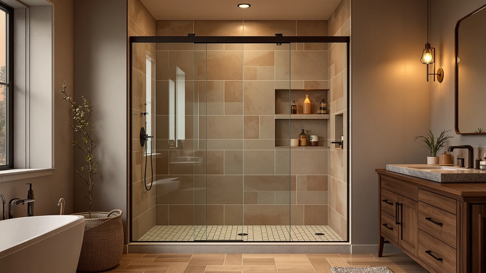

Frameless Double Sliding Shower Review (2026): Worth It?
Prices and picks verified as of October 2026. Independent, reader-supported reviews.


Quick Answer
The LMLMD Frameless Double Sliding Shower Door is our featured pick in this frameless double sliding shower review, built for a 67 to 72 inch wide by 72 inch tall opening at $586.78. If your opening is narrower or your budget caps closer to $300, the Leramaner, Narolabo, and EASYWORC alternatives below cover similar sliding designs for roughly $287 less.
Our pick: Frameless Double Sliding Shower Door — $586.78 Check Price on Amazon
Bottom line: our top pick is the Frameless Double Sliding Shower Door 67"-72" Wx72 H at $586.78.
Things to Know Before You Buy
- At $586.78, the LMLMD costs more than every alternative in this frameless double sliding shower review. The Leramaner and Narolabo both list at $299.99, and the EASYWORC runs $299.89.
- The LMLMD fits a 67 to 72 inch wide, 72 inch tall opening. That width range covers larger alcoves than a standard single sliding door.
- The EASYWORC is sized for a narrower 32 to 34 inch wide, 72 inch tall opening. Measure your stall before assuming any door in this comparison fits your space.
- None of the four listings in this comparison show a published rating or review count. There isn't an owner feedback history yet to weigh alongside price and size.
- The LMLMD's listing doesn't specify glass thickness or frame material. Confirm those details directly with the seller before you order.
This frameless double sliding shower review compares four sliding shower doors on price and stated opening size, from a $586.78 double sliding model built for wide alcoves to three single sliding alternatives priced near $300.
The LMLMD Frameless Double Sliding Shower Door is the door we're weighing here, and at $586.78 it's priced well above the Leramaner, Narolabo, and EASYWORC alternatives covered later in this review. Its 67 to 72 inch wide opening range is also the widest of the four, which matters most if your stall is too large for a standard single sliding door.
Why You Should Trust Us
Ilane Tall covers bath fixtures for Best Shower Doors and has researched frameless, sliding, and corner shower doors across multiple price points. For this frameless double sliding shower review, she compared the LMLMD's price and stated dimensions against three lower-priced sliding alternatives using the current product listings for each door. We do not accept free products in exchange for coverage, and every price and dimension cited here comes directly from the listing at the time of publication.
Our editorial process treats a wider opening range as one factor among several, not an automatic reason to recommend the pricier door. The LMLMD still has to justify a $586.78 price against three alternatives that cost roughly $287 less, and that trade-off shapes every comparison in this piece. When a listing leaves out a detail, such as glass thickness or frame material, we say so instead of filling the gap with a guess.
Our Research Experience
This frameless double sliding shower review is based on research, not physical use. We compared the LMLMD Frameless Double Sliding Shower Door against three alternatives using the specifications, pricing, and product listings available for each door. We do not run a fake testing lab, and we do not claim to have installed or lived with any of the doors covered here.
We looked closely at how the LMLMD's 67 to 72 inch wide opening compares to the EASYWORC's narrower 32 to 34 inch frame, since opening width is the detail most likely to rule a door in or out before price even enters the decision.
We also cross-checked pricing for all four doors against their current listings to confirm nothing had shifted since publication. Where a data point wasn't available, such as glass thickness for the LMLMD or a published rating for any of the four doors, we noted that gap rather than estimate a number the listing doesn't provide.
This frameless double sliding shower review updates its pricing as listings change, so the figures above reflect what each seller published at the time we last checked. If a price shifts after publication, treat the percentage difference between doors as more reliable than the exact dollar figures.
Overview & Specs

Frameless Double Sliding Shower Door
What we like
- The 67 to 72 inch wide opening range covers larger alcoves than any single sliding alternative in this review
- The double sliding panel design splits the glass across two tracks instead of one, which can mean a narrower reach to open either side
- At 72 inches tall, the stated height matches a standard shower stall without requiring a custom order
Flaws but not dealbreakers
- At $586.78, it costs $286.79 more than the Leramaner and Narolabo, and $286.89 more than the EASYWORC
- The listing doesn't specify glass thickness or frame material, so you'll want to confirm those details with the seller before ordering
- There's no published rating or review count yet, so there isn't an owner feedback history to weigh against the alternatives below
| Material | — |
| Size | 67" - 72"W x 72"H |
The LMLMD Frameless Double Sliding Shower Door is the most expensive door in this frameless double sliding shower review at $586.78, built for a 67 to 72 inch wide by 72 inch tall opening. The double sliding design splits the glass into two panels that move independently, which the brand positions for wider alcoves that a single sliding door can't span.
That price covers a wider opening range than any of the three alternatives below, but the listing stops short of stating a glass thickness or frame material, two details the Leramaner and Narolabo listings also leave out. If those specs matter to your decision, confirm them directly with the seller rather than assuming a standard thickness.
What We Liked
The clearest strength in this frameless double sliding shower review is the LMLMD's opening range. At 67 to 72 inches wide, it covers alcoves that the EASYWORC's 32 to 34 inch frame and the Leramaner and Narolabo's narrower builds simply can't reach, which matters most if you're replacing an oversized tub rather than a standard stall.
We also liked that the 72 inch height is stated plainly and matches a standard shower stall, so you're not guessing whether a custom height order is required the way you might with a non-standard enclosure. A buyer measuring a wide alcove can compare that single number against their own opening in seconds.
The double sliding mechanism itself is a genuine design difference from the three single sliding alternatives covered later in this review, giving you two independently moving panels rather than one fixed panel and one sliding panel. For a wide opening, that layout can mean a shorter reach to open either side compared with pushing one long panel the full width of the stall.
What Could Be Better
Price is the clearest drawback in this frameless double sliding shower review. At $586.78, the LMLMD costs $286.79 more than the Leramaner Framless Glass Shower Door Sliding and the Narolabo Frameless Sliding Glass Shower Door, and $286.89 more than the EASYWORC. That gap is close to double the cost of any single alternative covered here.
The listing also doesn't state a glass thickness or frame material, a gap that matters more at this price point than it would on a budget door. And because none of the four listings in this comparison show a published rating or review count, you won't find owner feedback history to weigh against the price gap. You'll want to read the current seller listing closely before you commit to the higher price.
Who Is It For?
The LMLMD Frameless Double Sliding Shower Door makes the most sense if your opening measures close to 67 to 72 inches wide, since that's a size range the three lower-priced alternatives in this frameless double sliding shower review aren't built to cover.
If your opening is narrower, closer to 32 to 34 inches, or your budget caps near $300, skip the LMLMD and look at the EASYWORC, Leramaner, or Narolabo alternatives below instead. Each covers a smaller footprint for roughly $287 less.
Buyers who specifically need a double sliding mechanism for a wide alcove are the best fit here. Anyone who hasn't measured their opening yet should do that first, since width is what separates this door from every alternative in this comparison.
Alternatives to Consider
The LMLMD isn't the only frameless sliding shower door worth considering, and the three doors below cover a lower price point at roughly $300 each. None matches the LMLMD's 67 to 72 inch width, so weigh your opening size against the savings before you decide.

Editor’s Pick
Framless Glass Shower Door Sliding
At $299.99, the Leramaner Framless Glass Shower Door Sliding undercuts the LMLMD by $286.79 with a single sliding frameless glass design, a strong alternative if your opening doesn't need the LMLMD's wider double sliding span.
$299.99
Check Price on Amazon
Best Value
Frameless Sliding Glass Shower Door
The Narolabo Frameless Sliding Glass Shower Door matches the Leramaner's $299.99 price, another sliding alternative to the LMLMD worth comparing on styling and panel layout before you choose between the two.
$299.99
Check Price on Amazon
Premium Choice
EASYWORC 32"-34" W x 72"
The EASYWORC is the most affordable door in this comparison at $299.89, built for a narrower 32 to 34 inch wide opening, the pick if your stall is tighter than the LMLMD's 67 to 72 inch range.
$299.89
Check Price on AmazonFrequently Asked Questions
How much does the LMLMD frameless double sliding shower door cost?
The LMLMD frameless double sliding shower door lists at $586.78, the most expensive option in this comparison. The Leramaner and Narolabo alternatives both run $299.99, and the EASYWORC lists at $299.89.
What size opening does the LMLMD frameless double sliding shower door fit?
The LMLMD is built for a 67 to 72 inch wide, 72 inch tall opening. Measure your stall at multiple points before you order, since a double sliding door depends on an accurate width across that range.
Is the LMLMD frameless double sliding shower door worth the price over the EASYWORC alternative?
It depends on your opening width. The LMLMD covers a 67 to 72 inch span, while the EASYWORC fits a narrower 32 to 34 inch opening for $286.89 less. Check your stall's width before deciding, since the two doors aren't built for the same size space.
Final Verdict
This frameless double sliding shower review comes down to one trade-off: a wider 67 to 72 inch opening range on the LMLMD against three single sliding doors that cost roughly $287 less. If your alcove measures close to that width and you specifically need a double sliding mechanism, the LMLMD earns its premium over the Leramaner, Narolabo, and EASYWORC. If your opening is narrower, especially near the EASYWORC's 32 to 34 inch range, or budget matters more than opening width, the three lower-priced alternatives cover similar sliding designs for about $300 each. Either way, measure your opening's exact width before you buy, since that's what separates the LMLMD from every alternative in this frameless double sliding shower review. None of the four listings publish a glass thickness, frame material, or review count, so confirm those details with the seller directly once you've narrowed the width down to a single door.